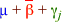

Advantages of orthogonal designs
If two factors in a completely randomised experiment are orthogonal or if the treatments and blocks are orthogonal in a randomised block design, the explained sums of squares do not depend on the order of adding the two terms to the model, simplifying the analysis.
An equally important advantage of experiments with orthogonal designs is that a table of the overall mean response for each factor level is a good summary of that factor's effect.
Tables of raw factor means are good summaries of factor effects in orthogonal designs.
Parameter estimates as summaries
In incomplete block designs, the blocks and treatments are non-orthogonal, so a table of raw treatment means does not summarise the effect of the treatment well.
Blocks are useful because they differ from each other. If one block naturally has high response values and also has a bigger proportion of treatment A than the other blocks, the raw treatment mean for treatment A will appear higher than it should.
The solution is based on the parameters of the model:
yijk = µ |
+ |
(explained by blocks) βi |
+ |
(explained by treatments) γj |
+ |
(unexplained) εijk |
The least squares estimates of the parameters {γ1, γ2, ..., γg} honestly describe the differences between the treatments but they are harder to interpret since γ1 = 0 and the other values describe differences between the treatments and this baseline treatment (1).
Adjusted treatment means
An alternative is to tabulate the predicted responses for the factor levels in a particular block — for example, in block 1. For block j, this would be the least squares estimate of
µ + β1 + γj
This is the treatment mean adjusted for block 1. Rather than picking a single block, the estimates could be made for an 'average' block,

A table of such adjusted treatment means is a good summary of the differences between the treatments.
Standard errors
If the design is balanced, the effects of all treatments are estimated with equal accuracy. The differences between all pairs of adjusted treatment means therefore have the same standard error. A single standard error can therefore accompany a table of adjusted treament means to help assess the difference between any two treatments.
In unbalanced designs, different standard errors should be used to compare different pairs of treatments.
Raw treatment means
The diagram below initially shows data that were simulated from an orthogonal design in which each of the four factor levels was used once within each block. The four treatment means are shown to the right of the data.
A randomised block design is used when it is known that the blocks differ. Drag the slider to the right to show the data that would have arisen if the final block had higher mean responses. Observe that one value getting each treatment increases and all raw treatment means increase by the same amount — their relative values are unchanged.
Now select Non-orthogonal design from the pop-up menu. The diagram now shows simulated data that might have arisen from an experiment with blocks that are smaller than the number of treatments — only three of the four treatments can be used in any block.
Again adjust the block effect for the final block. Observe that only three of the treatments are now affected, so the relative positions of the treatment means change.
The raw treatment means do not summarise the effect of the factor for non-orthogonal designs.
Adjusted treatment means
The diagram below is similar but displays adjusted treatment means rather than raw means.
Initially the treatment means are 'adjusted for block 1' — they are the predicted mean responses for the four treatments in block 1. Drag the slider and observe that adding a constant to all values in block 8 has no effect on these predictions. The same holds for adjustments for all other blocks except for block 8 and the average of all blocks.
Now select Non-orthogonal design from the pop-up menu. The adjusted treatment means have the same properties for orthogonal and non-orthogonal designs.
The relative sizes of the adjusted treatment means are not affected by a 'high' block even if the design is non-orthogonal.